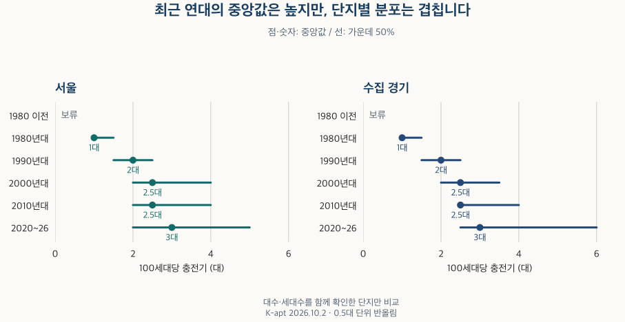

아파트의 진화 · 전기차 충전기
아파트 전기차 충전기, 얼마나 설치됐을까? 서울·경기 등록 자료 비교
서울·수집 경기 아파트의 전기차 충전기 설치 비율과 100세대당 대수를 비교합니다. 준공 연대·단지 규모·지역 차이, 자료 누락, 2026년 4~10월 등록 변화를 구분합니다.
분석 기간 · 현재 비교 2026.10.2 · 등록 변화 2026.4~10 | 자료 기준일 · 공식 항목 확인 2026-10-16
전기차를 타고 이사할 때는 “충전기 있음”이라는 안내만으로 충분하지 않습니다. 몇 세대가 몇 대를 함께 쓰는지, 내 차를 충전할 수 있는지까지 궁금해집니다. 서울·수집 경기의 아파트 등록 자료에서 설치 비율과 세대당 대수, 준공 연대·규모에 따른 차이를 살펴봤습니다.
전기차 대수, 충전기 대수, 전용 주차면은 같은 숫자일까요?
서로 다른 숫자입니다. K-apt 관리시설정보는 단지의 전기차 보유대수, 지상·지하 충전기 설치 여부, 전기차 전용 주차면, 충전시설의 종류·속도·설치대수 등을 나누어 보여줍니다. 전용 주차면이 있다고 그 수만큼 충전기가 설치됐다고 볼 수 없습니다.
이 글의 설치 비율은 지상·지하 중 한쪽이라도 ‘설치’라고 적혔으면 설치로, 양쪽 모두 ‘미설치’이면 미설치로 판정한 단지들 사이의 비율입니다. 설치 여부와 대수가 서로 모순되거나, 문구만으로 판단할 수 없으면 보류합니다. 한쪽만 ‘미설치’이고 다른 쪽이 비어 있으면 단지 전체가 미설치라고 단정하지 않습니다.
100세대당 대수는 지상·지하 대수를 모두 확인한 뒤 더하고, 같은 단지의 일치하는 세대수로 나눠 100을 곱합니다. 빈칸을 0대로 채우지 않습니다. 따라서 ‘설치’ 문구를 확인한 단지와 대수까지 비교할 수 있는 단지는 서로 다릅니다.
지상에 ‘설치·2대’, 지하에는 대수가 비어 있다면 충전기가 있다는 사실은 확인할 수 있습니다. 하지만 지하를 0대로 가정해 총 2대라고 계산하지 않습니다. 충전기 대수와 주차면수도 서로 더하지 않습니다.
서울과 경기 아파트에는 얼마나 설치돼 있나요?
설치 여부를 확인한 단지에서는 높은 비율로 나타납니다. 다만 확인된 단지의 구성이 두 지역에서 다릅니다. 서울의 약 85%와 수집 경기의 약 95%를 곧바로 지역 전체의 격차로 읽으면 안 됩니다.
| 구분 | 설치 비율 | 100세대당 중앙값 | 가운데 50% | 세대수 가중 평균 | 설치 여부 확인 단지 비중 |
|---|---|---|---|---|---|
| 서울 | 85% | 2.5대 | 1.5–3.5대 | 3대 | 20–30% |
| 수집 경기 | 95% | 2.5대 | 2–3.5대 | 3대 | 50–60% |
설치 여부가 확인된 단지의 비중은 단지 수로 보면 서울 20~30%, 수집 경기 50~60%입니다. 세대수가 알려진 전체 단지를 분모로 계산하면 같은 확인 단지들이 차지하는 세대수 비중은 각각 70~80%, 80~90%입니다. 큰 단지가 자료에 더 많이 포함될 수 있어 두 기준을 함께 보여줍니다.
대수·세대수가 일치한 단지의 중앙값은 두 지역 모두 100세대당 약 2.5대이고, 세대수로 가중한 평균은 약 3대입니다. 중앙값은 단지마다 한 표를 주며, 가중 평균은 확인된 단지들의 충전기 합계를 그 단지들의 세대수 합계로 나눕니다. 미기재 단지를 0대로 넣은 전체 평균이 아닙니다.
표시 비율은 5%포인트, 대수는 0.5대 단위로 반올림했습니다. 표시값이 같아도 원래 값이 같다고 할 수 없습니다. 보류는 0이 아니며, 반올림된 100%도 모든 단지의 실제 사용 가능성을 보장하지 않습니다.
신축이면 충전기가 더 넉넉할까요?
대수를 확인한 단지에서 최근 연대의 중앙값은 1980~1990년대보다 높습니다. 서울·수집 경기 모두 1980년대는 100세대당 약 1대, 1990년대는 약 2대, 2020~2026년은 약 3대입니다. 하지만 같은 연대 안의 차이도 있고, 연대별 분포가 서로 겹칩니다.

| 구분 | 설치 비율 | 100세대당 중앙값 | 가운데 50% | 세대수 가중 평균 | 설치 여부 확인 단지 비중 |
|---|---|---|---|---|---|
| 서울 · 1980년 이전 | 보류 | 보류 | 보류 | 보류 | 10–20% |
| 서울 · 1980년대 | 50% | 1대 | 1–1.5대 | 1대 | 40–50% |
| 서울 · 1990년대 | 80% | 2대 | 1.5–2.5대 | 2대 | 30–40% |
| 서울 · 2000년대 | 90% | 2.5대 | 2–4대 | 3.5대 | 10–20% |
| 서울 · 2010년대 | 90% | 2.5대 | 2–4대 | 3.5대 | 30–40% |
| 서울 · 2020~2026년 | 보류 | 3대 | 2–5대 | 5대 | 30–40% |
| 서울 · 연도 미상 | 보류 | 보류 | 보류 | 보류 | 자료 부족 |
| 수집 경기 · 1980년 이전 | 보류 | 보류 | 보류 | 보류 | 자료 부족 |
| 수집 경기 · 1980년대 | 45% | 1대 | 1–1.5대 | 1대 | 10–20% |
| 수집 경기 · 1990년대 | 90% | 2대 | 1.5–2.5대 | 2대 | 50–60% |
| 수집 경기 · 2000년대 | 95% | 2.5대 | 2–3.5대 | 3대 | 50–60% |
| 수집 경기 · 2010년대 | 90% | 2.5대 | 2.5–4대 | 3.5대 | 60–70% |
| 수집 경기 · 2020~2026년 | 95% | 3대 | 2.5–6대 | 4대 | 50–60% |
| 수집 경기 · 연도 미상 | 보류 | 보류 | 보류 | 보류 | 자료 부족 |
설치 비율도 1980년대보다 이후 연대에서 높게 나타나지만, 모든 연대에서 순서대로 증가하지는 않습니다. 서울 2020~2026년의 설치 비율은 작은 범주가 드러나지 않도록 보류했습니다. 대수 분포가 나온다고 설치 비율도 같은 기준으로 공개할 수 있는 것은 아닙니다.
큰 단지는 항상 더 넉넉할까요?
규모가 커질수록 100세대당 중앙값이 계속 커지는 모습은 아닙니다. 아래 네 규모에서 두 지역 모두 약 2.5대로 표시됩니다. 전체 대수가 많은 것과 세대수에 비해 여유가 있는 것은 다릅니다.
| 구분 | 설치 비율 | 100세대당 중앙값 | 가운데 50% | 세대수 가중 평균 | 설치 여부 확인 단지 비중 |
|---|---|---|---|---|---|
| 서울 · 300세대 미만 | 80% | 2.5대 | 2–4대 | 3대 | 10–20% |
| 서울 · 300~499세대 | 85% | 2.5대 | 1.5–3.5대 | 3.5대 | 90–100% |
| 서울 · 500~999세대 | 90% | 2.5대 | 1.5–3대 | 3대 | 80–90% |
| 서울 · 1,000세대 이상 | 85% | 2.5대 | 1–3.5대 | 3대 | 80–90% |
| 서울 · 세대수 미상 | 보류 | 보류 | 보류 | 보류 | 자료 부족 |
| 수집 경기 · 300세대 미만 | 85% | 2.5대 | 2–3.5대 | 3대 | 20–30% |
| 수집 경기 · 300~499세대 | 95% | 2.5대 | 2–3.5대 | 3대 | 90–100% |
| 수집 경기 · 500~999세대 | 95% | 2.5대 | 2–3.5대 | 3대 | 90–100% |
| 수집 경기 · 1,000세대 이상 | 95% | 2.5대 | 2–3.5대 | 3대 | 90–100% |
| 수집 경기 · 세대수 미상 | 보류 | 보류 | 보류 | 보류 | 자료 부족 |
서울의 설치 비율은 500~999세대 구간에서 약 90%, 1,000세대 이상에서 약 85%입니다. 이 차이에는 준공 연대와 입지, 자료가 있는 단지의 차이가 함께 들어 있습니다. 규모가 시설 설치를 늘리거나 줄였다는 효과를 분리한 분석은 아닙니다. 연대·규모는 각각 나눈 비교이며 두 조건을 동시에 맞춘 표가 아닙니다.
내가 보는 지역도 전체와 같을까요?
지역마다 확인 범위와 분포가 다릅니다. 아래 표에는 서울 25개 구와 수집 경기 36개 지역을 빠짐없이 남겼습니다. 경기의 구가 있는 시는 수집 단위인 구별로 보며, 시 전체와 구를 중복해서 더하지 않습니다. 인천과 미수집 경기를 포함한 수도권 전체 순위로 읽지 않습니다.
서울 · 지역별 비교 펼치기
| 구분 | 설치 비율 | 100세대당 중앙값 | 가운데 50% | 세대수 가중 평균 | 설치 여부 확인 단지 비중 |
|---|---|---|---|---|---|
| 종로구 | 보류 | 2.5대 | 1.5–3대 | 4.5대 | 10–20% |
| 중구 | 보류 | 3대 | 2–4.5대 | 3.5대 | 20–30% |
| 용산구 | 70% | 3대 | 2.5–6.5대 | 5.5대 | 20–30% |
| 성동구 | 보류 | 2.5대 | 1.5–5대 | 3대 | 50–60% |
| 광진구 | 70% | 2.5대 | 2–4대 | 3.5대 | 20–30% |
| 동대문구 | 90% | 2.5대 | 1.5–3대 | 2.5대 | 20–30% |
| 중랑구 | 보류 | 2.5대 | 2–3.5대 | 3.5대 | 30–40% |
| 성북구 | 보류 | 2.5대 | 2–3대 | 3.5대 | 50–60% |
| 강북구 | 보류 | 2.5대 | 2–3.5대 | 보류 | 20–30% |
| 도봉구 | 보류 | 2대 | 1–3대 | 2대 | 40–50% |
| 노원구 | 85% | 2대 | 1.5–3대 | 2대 | 50–60% |
| 은평구 | 85% | 2.5대 | 2–3.5대 | 3대 | 10–20% |
| 서대문구 | 보류 | 2.5대 | 1.5–3대 | 2.5대 | 20–30% |
| 마포구 | 보류 | 2.5대 | 2–3.5대 | 3대 | 20–30% |
| 양천구 | 70% | 2.5대 | 1.5–3대 | 2.5대 | 20–30% |
| 강서구 | 85% | 2.5대 | 2–3대 | 3대 | 20–30% |
| 구로구 | 85% | 2대 | 1.5–3대 | 2.5대 | 10–20% |
| 금천구 | 보류 | 2대 | 1.5–2.5대 | 2.5대 | 20–30% |
| 영등포구 | 75% | 2.5대 | 2–3대 | 2.5대 | 50–60% |
| 동작구 | 90% | 2.5대 | 2–3대 | 2.5대 | 30–40% |
| 관악구 | 85% | 2.5대 | 1–2.5대 | 2대 | 10–20% |
| 서초구 | 80% | 3.5대 | 2–5대 | 5대 | 10–20% |
| 강남구 | 80% | 2.5대 | 1.5–3.5대 | 4대 | 20–30% |
| 송파구 | 80% | 3대 | 2–4대 | 3대 | 20–30% |
| 강동구 | 80% | 2.5대 | 2–4대 | 5대 | 10–20% |
수집 경기 · 지역별 비교 펼치기
| 구분 | 설치 비율 | 100세대당 중앙값 | 가운데 50% | 세대수 가중 평균 | 설치 여부 확인 단지 비중 |
|---|---|---|---|---|---|
| 수원시 장안구 | 보류 | 2대 | 2–3대 | 3.5대 | 40–50% |
| 수원시 권선구 | 90% | 2.5대 | 2–3대 | 3대 | 50–60% |
| 수원시 팔달구 | 80% | 2.5대 | 1.5–3대 | 2대 | 40–50% |
| 수원시 영통구 | 보류 | 3대 | 2–3.5대 | 3대 | 60–70% |
| 성남시 수정구 | 보류 | 3대 | 2–4대 | 3대 | 30–40% |
| 성남시 중원구 | 보류 | 2대 | 1.5–4.5대 | 3대 | 30–40% |
| 성남시 분당구 | 보류 | 3대 | 2–4대 | 3대 | 60–70% |
| 의정부시 | 85% | 2대 | 2–2.5대 | 2.5대 | 60–70% |
| 안양시 만안구 | 보류 | 2대 | 1.5–3대 | 2.5대 | 20–30% |
| 안양시 동안구 | 90% | 2대 | 1.5–2.5대 | 2.5대 | 30–40% |
| 부천시 원미구 | 85% | 2대 | 1.5–2.5대 | 2.5대 | 20–30% |
| 부천시 소사구 | 80% | 2대 | 1–3대 | 2대 | 20–30% |
| 부천시 오정구 | 70% | 2대 | 1–2.5대 | 2대 | 10–20% |
| 광명시 | 보류 | 2.5대 | 1–3대 | 2대 | 50–60% |
| 평택시 | 90% | 2.5대 | 2–4.5대 | 3.5대 | 60–70% |
| 안산시 상록구 | 보류 | 2대 | 1–3대 | 2대 | 50–60% |
| 안산시 단원구 | 보류 | 2.5대 | 1.5–3대 | 3대 | 60–70% |
| 고양시 덕양구 | 보류 | 2.5대 | 1.5–3대 | 2.5대 | 50–60% |
| 고양시 일산동구 | 100% | 2.5대 | 2–3.5대 | 2.5대 | 50–60% |
| 고양시 일산서구 | 보류 | 2.5대 | 2–3.5대 | 2.5대 | 60–70% |
| 과천시 | 보류 | 3대 | 3–4대 | 4대 | 50–60% |
| 구리시 | 보류 | 2.5대 | 2–3대 | 2.5대 | 30–40% |
| 남양주시 | 보류 | 2.5대 | 2–4대 | 3.5대 | 60–70% |
| 군포시 | 보류 | 2대 | 1.5–2.5대 | 2대 | 20–30% |
| 의왕시 | 보류 | 2.5대 | 2–3대 | 3.5대 | 50–60% |
| 하남시 | 보류 | 2.5대 | 2–4대 | 3대 | 80–90% |
| 용인시 처인구 | 보류 | 2.5대 | 2–3.5대 | 3.5대 | 30–40% |
| 용인시 기흥구 | 보류 | 2.5대 | 2–4대 | 3.5대 | 60–70% |
| 용인시 수지구 | 보류 | 3대 | 2–4.5대 | 3.5대 | 60–70% |
| 파주시 | 90% | 2.5대 | 1.5–4대 | 3.5대 | 70–80% |
| 김포시 | 보류 | 2.5대 | 2–3.5대 | 3대 | 70–80% |
| 화성시 만세구 | 보류 | 3대 | 2–3.5대 | 3.5대 | 60–70% |
| 화성시 효행구 | 보류 | 3대 | 2.5–4.5대 | 3.5대 | 70–80% |
| 화성시 병점구 | 보류 | 2.5대 | 2–3.5대 | 3대 | 80–90% |
| 화성시 동탄구 | 보류 | 2.5대 | 2.5–3.5대 | 3.5대 | 80–90% |
| 광주시 | 보류 | 2.5대 | 2.5–4.5대 | 3.5대 | 70–80% |
지역 중앙값으로 한 단지의 이용 편의를 정할 수는 없습니다. 자료가 적거나 작은 설치·미설치 범주가 있는 곳은 비율을 보류했습니다. 확인 단지 비중이 낮은 지역을 충전기가 적은 지역으로 바꾸어 해석하지 않습니다.
4월·6월·8월 사이에 충전기가 늘었을까요?
같은 단지를 같은 조건으로 연결하면 등록 대수 합계가 늘었습니다. 2026년 4월 24일과 8월 28일을 비교한 증가량은 서울 약 600대, 수집 경기 약 2,300대입니다. 두 시점 모두 대수와 세대수를 확인할 수 있는 단지만의 변화이며, 이 기간에 실제 새로 설치한 대수를 뜻하지 않습니다.
| 지역 | 자료일자 비교 | 등록 대수 합계 변화 | 합계 변화율 | 두 시점 대수 비교 단지 비중 |
|---|---|---|---|---|
| 서울 | 04.24 → 06.26 | +200대 | 0.5% | 20–30% |
| 서울 | 06.26 → 08.28 | +300대 | 1% | 20–30% |
| 서울 | 04.24 → 08.28 | +600대 | 1.5% | 20–30% |
| 서울 | 08.28 → 10.02 | 0대 | 0% | 20–30% |
| 수집 경기 | 04.24 → 06.26 | +1,700대 | 3% | 40–50% |
| 수집 경기 | 06.26 → 08.28 | +600대 | 1% | 40–50% |
| 수집 경기 | 04.24 → 08.28 | +2,300대 | 4% | 40–50% |
| 수집 경기 | 08.28 → 10.02 | +200대 | 0.5% | 40–50% |
원래 비교인 4월→6월, 6월→8월, 4월→8월을 모두 남겼고, 8월→10월을 추가했습니다. 비교쌍마다 양쪽 자료가 있는 단지가 달라 인접 기간 변화량을 더해도 4월→8월 값과 일치하지 않을 수 있습니다. 각각 반올림한 값이라는 점도 고려해야 합니다. 서울 8월→10월의 표시값 0대·0%는 정확히 변화가 없었다는 뜻이 아닙니다.
증가만 있었던 것도 아닙니다. 수집 경기의 6월→8월과 4월→8월 비교에서는 등록 대수가 감소한 단지도 확인됩니다. 다음 표는 증가·감소·동일 비중을 함께 보여주되, 작은 범주가 있으면 세 방향을 모두 보류합니다.
대수 변화 방향과 설치 여부 문구의 변화 펼치기
| 지역·자료일자 | 증가 | 감소 | 같음 | 설치/미설치 문구 전환 | 미정이 포함된 문구 변화 |
|---|---|---|---|---|---|
| 서울 · 04.24 → 06.26 | 보류 | 보류 | 보류 | 변화 확인 | 판정 보류 |
| 서울 · 06.26 → 08.28 | 0–5% | 0–5% | 95–100% | 변화 확인 | 판정 보류 |
| 서울 · 04.24 → 08.28 | 보류 | 보류 | 보류 | 변화 확인 | 변화 확인 |
| 서울 · 08.28 → 10.02 | 보류 | 보류 | 보류 | 판정 보류 | 판정 보류 |
| 수집 경기 · 04.24 → 06.26 | 보류 | 보류 | 보류 | 변화 확인 | 변화 확인 |
| 수집 경기 · 06.26 → 08.28 | 0–5% | 0–5% | 95–100% | 변화 확인 | 변화 확인 |
| 수집 경기 · 04.24 → 08.28 | 0–5% | 0–5% | 90–95% | 변화 확인 | 변화 확인 |
| 수집 경기 · 08.28 → 10.02 | 보류 | 보류 | 보류 | 판정 보류 | 변화 확인 |
0~5% 구간에는 정확한 0도 포함될 수 있습니다. 이 구간만으로 모든 비교에서 감소가 있었다고 단정하지 않습니다. ‘판정 보류’ 역시 변화가 전혀 없다는 뜻이 아닙니다. 설치/미설치 문구가 바뀐 경우와, 어느 한쪽에 미정이 포함된 경우는 따로 살폈습니다. 미정에서 ‘설치’로 바뀐 기록은 신규 설치와 뒤늦은 기재를 구분할 수 없습니다.
등록 대수 감소도 실제 철거라고 확인한 결과가 아닙니다. 정정, 기재 방식 변경, 설비 변경 등이 섞였을 수 있으며 원인을 분리하지 못했습니다. 이 자료로 설치일이나 현재 가동 상태를 복원하지 않습니다.
기록이 없는 단지를 포함하면 결론이 달라질까요?
달라질 수 있습니다. 미정인 모든 단지를 미설치로 보는 경우와 설치로 보는 경우를 각각 계산하면, 전체 단지의 설치 비율 가정 범위는 서울 약 20~100%, 수집 경기 약 45~100%까지 넓어집니다. 이는 등록 문구가 맞다고 놓은 극단적인 가정 범위이며, 신뢰구간이나 실제 보급률 추정치가 아닙니다.
서울 · 전체·연대·규모·지역의 자료 확인 범위
| 구분 | 설치 여부: 단지 기준 | 설치 여부: 세대수 기준 | 대수 비교: 단지 기준 | 대수 비교: 세대수 기준 | 세대수 미상 단지 비중 | 미정을 모두 미설치/설치로 가정 |
|---|---|---|---|---|---|---|
| 서울 | 20–30% | 70–80% | 20–30% | 60–70% | 0–10% | 20–100% |
| 서울 · 1980년 이전 | 10–20% | 60–70% | 자료 부족 | 자료 부족 | 20–30% | 보류 |
| 서울 · 1980년대 | 40–50% | 80–90% | 20–30% | 40–50% | 20–30% | 20–80% |
| 서울 · 1990년대 | 30–40% | 70–80% | 30–40% | 60–70% | 0–10% | 30–95% |
| 서울 · 2000년대 | 10–20% | 70–80% | 10–20% | 60–70% | 0–10% | 15–100% |
| 서울 · 2010년대 | 30–40% | 80–90% | 20–30% | 70–80% | 0–10% | 25–100% |
| 서울 · 2020~2026년 | 30–40% | 60–70% | 20–30% | 60–70% | 0–10% | 보류 |
| 서울 · 연도 미상 | 자료 부족 | 자료 부족 | 자료 부족 | 자료 부족 | 자료 부족 | 보류 |
| 서울 · 300세대 미만 | 10–20% | 50–60% | 10–20% | 40–50% | 0–10% | 10–100% |
| 서울 · 300~499세대 | 90–100% | 90–100% | 70–80% | 70–80% | 0–10% | 75–90% |
| 서울 · 500~999세대 | 80–90% | 80–90% | 70–80% | 70–80% | 0–10% | 75–90% |
| 서울 · 1,000세대 이상 | 80–90% | 80–90% | 70–80% | 70–80% | 0–10% | 70–90% |
| 서울 · 세대수 미상 | 자료 부족 | 자료 부족 | 자료 부족 | 자료 부족 | 90–100% | 보류 |
| 종로구 | 10–20% | 70–80% | 10–20% | 60–70% | 10–20% | 보류 |
| 중구 | 20–30% | 40–50% | 10–20% | 30–40% | 10–20% | 보류 |
| 용산구 | 20–30% | 70–80% | 10–20% | 40–50% | 0–10% | 20–95% |
| 성동구 | 50–60% | 60–70% | 40–50% | 50–60% | 0–10% | 보류 |
| 광진구 | 20–30% | 70–80% | 10–20% | 50–60% | 0–10% | 20–95% |
| 동대문구 | 20–30% | 70–80% | 20–30% | 60–70% | 0–10% | 20–100% |
| 중랑구 | 30–40% | 70–80% | 20–30% | 60–70% | 0–10% | 보류 |
| 성북구 | 50–60% | 80–90% | 40–50% | 70–80% | 0–10% | 보류 |
| 강북구 | 20–30% | 70–80% | 10–20% | 60–70% | 0–10% | 보류 |
| 도봉구 | 40–50% | 80–90% | 40–50% | 70–80% | 0–10% | 보류 |
| 노원구 | 50–60% | 80–90% | 40–50% | 60–70% | 10–20% | 40–95% |
| 은평구 | 10–20% | 70–80% | 10–20% | 60–70% | 0–10% | 15–100% |
| 서대문구 | 20–30% | 70–80% | 20–30% | 70–80% | 0–10% | 보류 |
| 마포구 | 20–30% | 70–80% | 20–30% | 60–70% | 0–10% | 보류 |
| 양천구 | 20–30% | 70–80% | 10–20% | 30–40% | 0–10% | 15–95% |
| 강서구 | 20–30% | 70–80% | 20–30% | 70–80% | 0–10% | 20–100% |
| 구로구 | 10–20% | 80–90% | 10–20% | 70–80% | 0–10% | 15–100% |
| 금천구 | 20–30% | 70–80% | 10–20% | 60–70% | 0–10% | 보류 |
| 영등포구 | 50–60% | 80–90% | 40–50% | 60–70% | 0–10% | 40–90% |
| 동작구 | 30–40% | 70–80% | 30–40% | 70–80% | 0–10% | 30–100% |
| 관악구 | 10–20% | 70–80% | 10–20% | 60–70% | 0–10% | 15–100% |
| 서초구 | 10–20% | 70–80% | 10–20% | 50–60% | 0–10% | 10–100% |
| 강남구 | 20–30% | 70–80% | 10–20% | 50–60% | 10–20% | 15–100% |
| 송파구 | 20–30% | 80–90% | 20–30% | 70–80% | 0–10% | 20–95% |
| 강동구 | 10–20% | 80–90% | 10–20% | 60–70% | 0–10% | 15–100% |
수집 경기 · 전체·연대·규모·지역의 자료 확인 범위
| 구분 | 설치 여부: 단지 기준 | 설치 여부: 세대수 기준 | 대수 비교: 단지 기준 | 대수 비교: 세대수 기준 | 세대수 미상 단지 비중 | 미정을 모두 미설치/설치로 가정 |
|---|---|---|---|---|---|---|
| 수집 경기 | 50–60% | 80–90% | 40–50% | 80–90% | 10–20% | 45–100% |
| 수집 경기 · 1980년 이전 | 자료 부족 | 자료 부족 | 자료 부족 | 자료 부족 | 20–30% | 보류 |
| 수집 경기 · 1980년대 | 10–20% | 60–70% | 0–10% | 30–40% | 20–30% | 5–95% |
| 수집 경기 · 1990년대 | 50–60% | 80–90% | 40–50% | 70–80% | 10–20% | 45–100% |
| 수집 경기 · 2000년대 | 50–60% | 80–90% | 50–60% | 80–90% | 0–10% | 50–100% |
| 수집 경기 · 2010년대 | 60–70% | 90–100% | 50–60% | 80–90% | 0–10% | 55–100% |
| 수집 경기 · 2020~2026년 | 50–60% | 80–90% | 50–60% | 80–90% | 0–10% | 55–100% |
| 수집 경기 · 연도 미상 | 자료 부족 | 자료 부족 | 자료 부족 | 자료 부족 | 자료 부족 | 보류 |
| 수집 경기 · 300세대 미만 | 20–30% | 60–70% | 20–30% | 50–60% | 0–10% | 20–100% |
| 수집 경기 · 300~499세대 | 90–100% | 90–100% | 80–90% | 80–90% | 0–10% | 85–100% |
| 수집 경기 · 500~999세대 | 90–100% | 90–100% | 80–90% | 80–90% | 0–10% | 85–100% |
| 수집 경기 · 1,000세대 이상 | 90–100% | 90–100% | 80–90% | 80–90% | 0–10% | 85–95% |
| 수집 경기 · 세대수 미상 | 자료 부족 | 자료 부족 | 자료 부족 | 자료 부족 | 90–100% | 보류 |
| 수원시 장안구 | 40–50% | 80–90% | 40–50% | 80–90% | 0–10% | 보류 |
| 수원시 권선구 | 50–60% | 80–90% | 50–60% | 80–90% | 0–10% | 50–100% |
| 수원시 팔달구 | 40–50% | 70–80% | 30–40% | 70–80% | 10–20% | 30–95% |
| 수원시 영통구 | 60–70% | 90–100% | 60–70% | 80–90% | 10–20% | 보류 |
| 성남시 수정구 | 30–40% | 80–90% | 20–30% | 70–80% | 0–10% | 보류 |
| 성남시 중원구 | 30–40% | 80–90% | 30–40% | 70–80% | 0–10% | 보류 |
| 성남시 분당구 | 60–70% | 90–100% | 60–70% | 80–90% | 20–30% | 보류 |
| 의정부시 | 60–70% | 80–90% | 50–60% | 80–90% | 0–10% | 50–95% |
| 안양시 만안구 | 20–30% | 70–80% | 20–30% | 70–80% | 10–20% | 보류 |
| 안양시 동안구 | 30–40% | 70–80% | 30–40% | 70–80% | 20–30% | 30–100% |
| 부천시 원미구 | 20–30% | 70–80% | 20–30% | 70–80% | 10–20% | 20–100% |
| 부천시 소사구 | 20–30% | 70–80% | 10–20% | 60–70% | 10–20% | 15–100% |
| 부천시 오정구 | 10–20% | 40–50% | 0–10% | 30–40% | 0–10% | 5–100% |
| 광명시 | 50–60% | 80–90% | 40–50% | 60–70% | 10–20% | 보류 |
| 평택시 | 60–70% | 90–100% | 50–60% | 80–90% | 0–10% | 55–95% |
| 안산시 상록구 | 50–60% | 90–100% | 40–50% | 80–90% | 0–10% | 보류 |
| 안산시 단원구 | 60–70% | 90–100% | 50–60% | 80–90% | 20–30% | 보류 |
| 고양시 덕양구 | 50–60% | 80–90% | 40–50% | 80–90% | 10–20% | 보류 |
| 고양시 일산동구 | 50–60% | 80–90% | 50–60% | 80–90% | 30–40% | 50–100% |
| 고양시 일산서구 | 60–70% | 90–100% | 50–60% | 80–90% | 20–30% | 보류 |
| 과천시 | 50–60% | 70–80% | 40–50% | 70–80% | 30–40% | 보류 |
| 구리시 | 30–40% | 80–90% | 30–40% | 80–90% | 10–20% | 보류 |
| 남양주시 | 60–70% | 90–100% | 60–70% | 80–90% | 0–10% | 보류 |
| 군포시 | 20–30% | 70–80% | 20–30% | 60–70% | 0–10% | 보류 |
| 의왕시 | 50–60% | 80–90% | 50–60% | 70–80% | 10–20% | 보류 |
| 하남시 | 80–90% | 90–100% | 80–90% | 90–100% | 0–10% | 보류 |
| 용인시 처인구 | 30–40% | 80–90% | 30–40% | 80–90% | 0–10% | 보류 |
| 용인시 기흥구 | 60–70% | 80–90% | 60–70% | 80–90% | 0–10% | 보류 |
| 용인시 수지구 | 60–70% | 90–100% | 60–70% | 80–90% | 0–10% | 보류 |
| 파주시 | 70–80% | 80–90% | 60–70% | 70–80% | 0–10% | 60–95% |
| 김포시 | 70–80% | 90–100% | 70–80% | 90–100% | 10–20% | 보류 |
| 화성시 만세구 | 60–70% | 90–100% | 60–70% | 80–90% | 0–10% | 보류 |
| 화성시 효행구 | 70–80% | 90–100% | 70–80% | 90–100% | 0–10% | 보류 |
| 화성시 병점구 | 80–90% | 80–90% | 70–80% | 80–90% | 0–10% | 보류 |
| 화성시 동탄구 | 80–90% | 90–100% | 80–90% | 90–100% | 0–10% | 보류 |
| 광주시 | 70–80% | 80–90% | 70–80% | 70–80% | 0–10% | 보류 |
설치 여부를 확인한 범위와 대수·세대수를 함께 확인한 범위를 나누었습니다. ‘세대수 기준’의 분모에는 세대수가 알려진 단지만 들어갑니다. 세대수가 없는 단지의 비중도 별도로 남겼습니다. 확인 범위 구간은 하한을 포함하고 상한은 포함하지 않으며, 90~100%만 100%를 포함합니다.
계산 조건을 바꾸면 얼마나 달라질까요?
| 구분 | 설치 비율 | 100세대당 중앙값 | 가운데 50% | 세대수 가중 평균 | 설치 여부 확인 단지 비중 |
|---|---|---|---|---|---|
| 서울 · 지상·지하 설치 여부 모두 기재 | 85% | 2.5대 | 1.5–3.5대 | 3대 | 20–30% |
| 서울 · 세대수 기록 충돌 제외 | 85% | 2.5대 | 2–3.5대 | 3.5대 | 20–30% |
| 서울 · 기본 연결 방식만 | 85% | 2.5대 | 1.5–3.5대 | 3대 | 20–30% |
| 서울 · 지상·지하 대수 모두 기재 | 100% | 2.5대 | 1.5–3.5대 | 3대 | 20–30% |
| 수집 경기 · 지상·지하 설치 여부 모두 기재 | 90% | 2.5대 | 2–3.5대 | 3대 | 50–60% |
| 수집 경기 · 세대수 기록 충돌 제외 | 95% | 2.5대 | 2–3.5대 | 3대 | 40–50% |
| 수집 경기 · 기본 연결 방식만 | 95% | 2.5대 | 2–3.5대 | 3대 | 50–60% |
| 수집 경기 · 지상·지하 대수 모두 기재 | 100% | 2.5대 | 2–3.5대 | 3대 | 40–50% |
지상·지하 양쪽의 설치 여부가 모두 명시된 단지로 좁히면 수집 경기 설치 비율은 약 90%로 표시됩니다. 한쪽에 ‘설치’가 적혔지만 다른 쪽 문구가 없는 단지도 기본 집계에서는 설치를 판정할 수 있어 대상이 다릅니다. 세대수 기록 충돌을 제외하면 서울의 가중 평균은 약 3.5대가 됩니다.
지상·지하 대수가 모두 기재된 집합에서는 설치 비율이 두 지역 모두 100%로 표시됩니다. 빈 대수 기록을 제외하는 선택이 설치 단지를 더 많이 남길 수 있다는 결과입니다. 이 수치를 전체 보급률로 제시하지 않습니다.
| 구분 | 설치 여부: 단지 기준 | 설치 여부: 세대수 기준 | 대수 비교: 단지 기준 | 대수 비교: 세대수 기준 | 세대수 미상 단지 비중 | 미정을 모두 미설치/설치로 가정 |
|---|---|---|---|---|---|---|
| 서울 · 지상·지하 설치 여부 모두 기재 | 20–30% | 70–80% | 20–30% | 60–70% | 0–10% | 20–100% |
| 서울 · 세대수 기록 충돌 제외 | 20–30% | 50–60% | 10–20% | 50–60% | 0–10% | 15–100% |
| 서울 · 기본 연결 방식만 | 20–30% | 70–80% | 20–30% | 60–70% | 0–10% | 20–100% |
| 서울 · 지상·지하 대수 모두 기재 | 20–30% | 60–70% | 20–30% | 60–70% | 0–10% | 20–100% |
| 수집 경기 · 지상·지하 설치 여부 모두 기재 | 50–60% | 80–90% | 40–50% | 80–90% | 10–20% | 45–100% |
| 수집 경기 · 세대수 기록 충돌 제외 | 40–50% | 70–80% | 40–50% | 70–80% | 10–20% | 40–100% |
| 수집 경기 · 기본 연결 방식만 | 50–60% | 80–90% | 40–50% | 80–90% | 10–20% | 45–100% |
| 수집 경기 · 지상·지하 대수 모두 기재 | 40–50% | 80–90% | 40–50% | 80–90% | 10–20% | 45–100% |
자료 누락과 자기보고의 오류 가능성은 남습니다. 현재 남은 단지들 가운데 자료가 연결된 시설을 비교한 것이므로, 철거된 오래된 단지나 모든 소규모 주택을 대표하지 않습니다. 설치 비율이 높다는 사실만으로 입주민이 충전기를 편리하게 이용한다고 결론내릴 수 없습니다.
이사할 단지에서는 무엇을 확인해야 할까요?
- 설치 여부와 현재 가동 대수를 따로 확인하세요. 관심 단지를 K-apt에서 조회한 뒤 관리사무소에 실제 사용 가능한 대수와 최근 변경 사항을 확인하세요.
- 내 차와 사용 조건을 맞춰 보세요. 연결 방식, 충전 속도, 운영 사업자, 이용 요금, 입주민 등록 절차를 확인하세요.
- 주로 이용할 시간의 상황을 보세요. 지상·지하 위치, 충전 후 이동 규칙, 대기 상황은 세대당 평균만으로 알 수 없습니다.
- 주차 여건도 함께 확인하세요. 충전시설과 전용 주차면, 전체 주차면은 다른 항목입니다. 후보 두 곳의 숫자와 현장 조건을 같은 기준으로 적어 보세요.
자료·계산·보류 기준 펼치기
현재 비교는 보유한 K-apt 2026년 10월 2일 기본정보를 서울 25개 구·수집 경기 36개 지역의 현재 단지 정보에 연결했습니다. 아파트·주상복합과 해당 도시형 생활주택을 포함합니다. 사용승인일이 유효하고 준공연도와 맞는 경우에 시설을 비교했습니다. 연결하지 못한 단지와 다른 유형은 전체 자료 확인 비율의 분모에 남겼습니다.
같은 단지·같은 자료일자의 필요한 항목이 모두 같은 반복 기록은 한 번만 셌습니다. 서로 다른 기록은 사용을 보류하며, 이름이 비슷하다는 이유로 새로 연결하지 않았습니다. 네 날짜 원자료를 두 방법으로 읽어 확인하고, 전체·연대·규모·지역 집계와 시점 비교도 두 방식으로 따로 계산했습니다.
대수는 0 이상의 정수만 사용합니다. ‘설치’인데 0대이거나 ‘미설치’인데 양수이면 모순으로 보류합니다. 세대당 대수는 양쪽 대수가 있고 자료의 세대수와 연결된 세대수가 일치할 때 계산합니다. 상세 기재 중 해석 가능한 형식의 대수도 요약 항목과 대조했지만, 빈 상세 기록을 0대로 바꾸거나 임의로 대수를 보정하지 않았습니다.
시점 비교는 현재 연결된 같은 단지에서 승인 연도·유형·세대수가 일치하는 경우만 비교했습니다. 2026년 4월 24일·6월 26일·8월 28일과 추가 10월 2일 자료에서 양끝 대수가 있는 비교쌍을 사용합니다. 과거 전체 시장을 대표하는 단지 목록이나 당시 실시간으로 알 수 있었던 정보만의 분석은 아닙니다.
비율·분포는 최소 10개 단지를 요구하며, 설치/미설치 또는 변화 방향의 양수 범주가 10개 미만이면 관련 비율을 보류합니다. 가중 평균은 어느 한 단지의 세대수가 비교 합계의 20%를 넘지 않는 경우에만 표시합니다. 시점별 합계 변화도 한 단지의 두 시점 대수가 전체 두 시점 대수의 20%를 넘지 않는지 확인했습니다.
설치 비율은 5%포인트, 100세대당 대수는 0.5대, 등록 합계 변화는 100대, 합계 변화율은 0.5%포인트 단위로 반올림했습니다. 개별 단지, 정확한 단지 수·세대수 합계·충전기 합계는 제공하지 않습니다. 기존 공개값과의 겹침과 실제 표시 범위를 검토했지만 외부의 모든 정보와 결합해도 개별 단지가 드러나지 않는다는 보증은 아닙니다.
공식 관리시설정보의 항목 안내를 2026년 10월 16일 확인했습니다. 단지를 선택하기 전 화면의 항목 정의를 확인한 것으로, 특정 단지의 현 시설을 확인한 것은 아닙니다. 이 글은 설치 의무 준수나 화재 위험, 가격 효과를 평가하지 않았습니다. 표시값·보류 범위는 공개 집계 파일(JSON)에 담았습니다.
분석·집필: 파파펭귄 (Nobot Kang). 에이전트로 원자료 대조·계산·공개 범위 검토와 초안 작성을 보조했습니다.